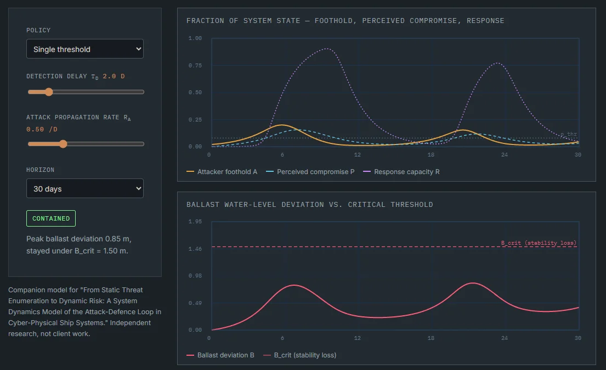

Models you can run.
The same methods used in engagements, running live in your browser. Nothing you enter leaves your machine.
 Network · 3D globe
Network · 3D globe
Global Disruption Atlas
Real ports, factories and trade corridors with disruption signals — weather, strikes, geopolitical alerts — and response scenarios you can overlay: reroute, buffer, alternate source. Each reports its cost in extra transit days and suspended lanes. Import your own network as CSV.
Open the Atlas →
System dynamics · Maritime cyberShip cyber-risk model
A five-stock model of a cyberattack on a ship’s ballast control system — attacker foothold, perceived compromise, response capacity, ballast deviation and containment effectiveness. Move the detection delay and watch whether containment arrives in time.
Run the model →Built as a companion tool for the Engineering Flexibility in Supply Chain Design research. Used in practice for network design and workshops.
Runs the same equations as the paper’s companion code. Read the case or the paper on SSRN.